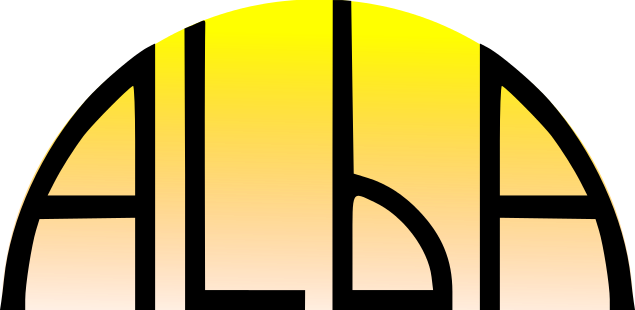

Bonemat is a freeware that maps on a Finite Element mesh bone elastic properties derived from Computed Tomography images.
Bonemat v3.2 can import CT images and FE models, interactively visualise them, and export the updated FE mesh once bone properties have been mapped. From this 3.2 version, Bonemat supports import/export to and from both Ansys and Abaqus, perhaps the two most used commercial FE packages.
Bonemat is mainly developed at Istituto Ortopedico Rizzoli in Bologna, Italy, with the active collaboration of other researchers (see People and Collaborate). Bonemat has been presented in a few Publications in the past, and is being used in many studies.
Bonemat permits to map any scalar field from a regular (rectilinear) grid to any mesh (tetrahedral and hexahedral) contained in the same space domain. In the bone analogy, the most used and the one that gives its name to the application, the rectilinear grid is the CT grid, hosting a field of HU numbers, which is transformed into a field of Young's moduli thanks to well known (yet not fully established) theoretical or empirical relationships, and mapped to an FE mesh through numerical integration.
The original idea and the first version date back to 1998. Refinements were made available to the research community in 2004 (new algorithm) and 2007 (first GUI). At last, in 2015 we developed a more user friendly version (v3.1) with interactive GUI with several CT/FE visualisation options, import/export to and from Ansys, and some documentation.
We are now issuing Bonemat v3.2, featuring several improvements:
Bonemat is based on ALBA (Agile Library for Biomedical Applications) an open-source rapid application development framework for computer-aided medicine written in C++. The ALBA architecture is made of open source external libraries and components necessary to build applications. ALBA and related applications are developed through the Agile Software Development methodology, based on the approach of delivering software quickly and continuously by promoting customer involvement, continuous testing and planning, and close teamwork.
